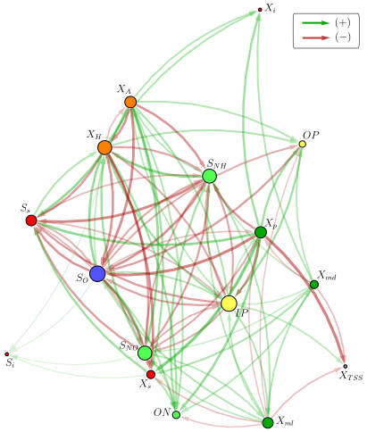
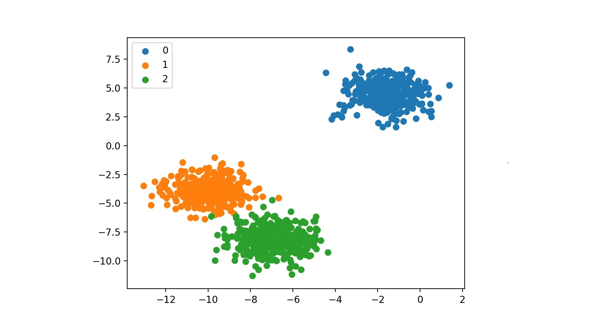

CHAD PARMET
I’m a friendly data scientist with a big heart and >15 years in healthcare. Before that, I looked for shipwrecks.
I love using ML, NLP, analytics, data analysis, and evidence-based thinking for good missions.
PROJECTS
A data science tool that saved 1-2 years

I created a tool to help grow an ontology, which is a kind of tree of relationships between concepts in medicine. An example of such a relationship is [insulin] -treats-> [type 2 diabetes]. These relationships are invaluable for powering APIs and search for medical content, but they're laborious and expensive to create because of the expertise required. The tool I built, called Cupid because it makes new relationships 💘, reads thousands of medical documents to find concepts and relationships between them. It proposes statements for doctors to review. Having first drafts generated by a machine saved an estimated 1-2 years compared with the doctors coming up with all these relationships manually. The project educated me about some pitfalls to steer clear of when doing entity recognition on medical text.
NLP & text mining (spaCy, Regex), Python (Pandas, Numpy), SOLR API, Excel
Metadata classification

I created a hybrid system that assigns two kinds of metadata to patient education documents, based on their titles. One piece of metadata is assigned by a machine learning model (text classifier) trained to identify 70 possible categories of documents. The other piece of metadata, with 6000 possible categories, is assigned through text processing and a live taxonomy. I learned tons, including how to track machine learning experiments more formally (MLFlow is rad!) and data augmentation for text.
Machine learning (Scikit-learn, MLFlow, random forests, logistic regression), NLP & text mining (spaCy, Regex), Python (Pandas, Numpy), SOLR API, Excel
Finding similar medical documents
I made a tool to identify similar or duplicate medical documents, using their text and metadata. It's being used to de-duplicate a large content library and to map internal content to external content. This project gave me hands-on experience with Doc2Vec and similarity statistics like Jaccard.
Doc2Vec (Gensim), NLP (spaCy), statistics, Python (Pandas, Numpy), Excel
White sharks and island rentals
I worked as a consultant for Community Data Platforms. I helped scope a project to track great white sharks, with the goal of surfacing insights for public safety and conservation. I also trained a model to estimate prices for rental homes on Nantucket. The most memorable lesson for me was a keen observation by an economist collaborator that markets may contain multiple sub-markets with different dynamics.
Machine learning (random forest, linear regression), Python (Scikit-learn, Pandas, Numpy)
Top 20% finish in machine learning competition about cancer

I built machine learning models using natural language processing (NLP) to predict the effects of different genetic mutations on cancer. The models worked by reading medical journal articles. This Kaggle competition was run by Memorial Sloan Kettering to help them make progress on techniques for personalized medicine. The competition taught me a boatload about the benefits of labor-intensive cleaning of messy text, and nifty ML tricks shared by the generous community of contestants.
Machine learning (XGboost, LASSO, Elastic-net, Ridge, SVD, CV), NLP & text mining (TF-IDF, Regex), Python (Scikit-learn, Pandas, Numpy, Scipy)
Triage chatbot discovery
I collaborated with the innovation department at a academic medical center partner to explore how to wire the brain of a chatbot to help triage patients. The exploration taught me about triage pathways, the statistics of diagnosis tests, and the huge number of patient variables to consider in evidence-based triage decisions.
Statistics, machine learning (CART), literature reviews in medicine and computer science
Citation formatter with a twist

I made a web app for Healthwise to format research citations in a house style. My colleagues use it in workflows several times a day. My favorite feature is a custom algorithm to convert the title of a journal article from Title Case to Sentence case. That's a challenge that commercial reference managers punt on, so it was great fun to work on. (To see the feature in action, enter article ID 28859415, and notice that most, but not all, words in the title get lowercased.) I learned gobs about NLP and deploying web apps to Amazon Web Services.
NLP (NLTK, Truecasing), Text
mining, Python (Flask), Amazon Web Services (S3, Lambda), Biopython, PubMed API
I made a web app for Healthwise to format research citations in a house style. My colleagues use it in workflows several times a day. My favorite feature is a custom algorithm to convert the title of a journal article from Title Case to Sentence case. That's a challenge that commercial reference managers punt on, so it was great fun to work on. (To see the feature in action, enter article ID 28859415, and notice that most, but not all, words in the title get lowercased.) I learned gobs about NLP and deploying web apps to Amazon Web Services.
NLP (NLTK, Truecasing), Text mining, Python (Flask), Amazon Web Services (S3, Lambda), Biopython, PubMed API
Predicting traffic jams

Are you tired of getting stuck in a traffic jam at the commuter train crossing in Framingham, Massachusetts? Buddy, I feel your pain! That's why I made Trainingham, a web app to forecast the next time the commuter rail will stop traffic there. So you and I can plan ahead. It taught me how to work with date and time data properly when running code on the cloud and the challenges of forecasting freight trains!
Python (JSON parsing, Flask, requests, datetime, pytz), AWS (S3, Lambda), time data, MBTA API
Analtyics data: analyses and dashboards

I fulfill staff and client requests for analyses, PowerBI dashboards, and reports on how Healthwise patient education is viewed, rated, and searched for. These projects show me, time and again, how critical it is for a data scientist to deeply understand the real world chain of events that generates the numbers in a dataset, and to never forget to ask what data might be missing.
PowerBI, DAX, Microsoft SQL Server, Excel, Python
Contributor to open source package for biomedical computing

While building the web app Bella, I proposed a change to Biopython, a Python package for biological computing. The accepted change enables a piece of Biopython to work on server-less deployments, such as AWS Lambda and Google Cloud Functions. Contributing to an open source project was a total joy.
Python (Biopython, unit testing), AWS (Lambda), GitHub (pull requests, CI), PubMed API
Web scraping to save $ on electricity

I wrote a Python script that monitored electricity prices every day and emailed me if my supplier's rate went down, so I could get a cheaper contract. The little project taught me the wonders of web scraping (I’m still tickled that you can automate filling out forms), and also the downsides of scrapin' over time (you need to keep pace with changes made to the website you're scraping).
Scraping & UI automation (Beautiful Soup, Selenium), Python (Pandas, Flask, SendGrid, logging)